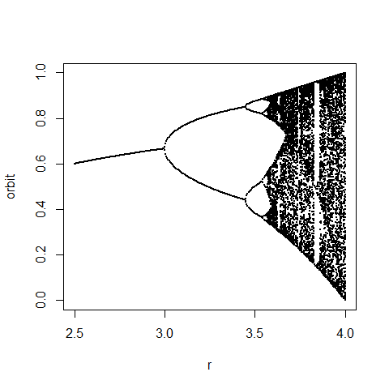

2 Programming Practical - P1
2.1 Getting started
Start a new RStudio session, set your current working directory, open a new R Script and save this (blank) script to a file with an appropriate name.
Use this script file to edit and keep copies of the code you write in this practical: you may find it useful be able to look back later.
2.2 Predicting the behaviour of for loops
We will use R to generate some data in the form of vectors and use these data to form some looping constructs. Predicting what code will do and testing your predictions by running the code should help cement your understanding of for loops.
Type the following code into your script. Remember that code after # is a comment and will be ignored by the R interpreter (you do not have to type these comments in for yourself, but you might want to if you think you will need to refer to them later).
a <- 1:10 # Assign the integers 1 to 10 in order to the vector a
print(a) # Print a to the screen## [1] 1 2 3 4 5 6 7 8 9 10b <- sample(a) # Set b to be a with elements shuffled into random order
print(b) # Print b to the screen## [1] 1 10 3 2 4 7 6 5 9 8Run the code a few times either by sourcing it or by highlighting it in the script then pressing the run button in RStudio.
You should note that:
- The first line creates a new vector a with the elements 1 to 10 in order
- The second line prints the vector a to the screen
- The third line uses a built-in R function to sample (all of) the elements of the vector a without replacement, i.e., to permute the elements into a different order, and assigns the result to the vector b
- The fourth line prints the vector b
2.2.1 Example one
Write down what you expect the output of the following code to be before verifying your answer by entering the code into your script and running it.
for (i in 1:10) {
print(paste(i, a[i]))
}2.2.2 Example two
Write down what you expect the output of the following code to be before verifying your answer by entering the code into your script and running it.
for (i in 1:10) {
print(paste(i, b[i]))
}2.3 Writing a for loop
Adapt the code from the lecture to use a for loop to do the following:
Print the 12 times table, i.e. produce output of the form
1 times 12 is 12
2 times 12 is 24
…
12 times 12 is 1442.4 Writing a while loop
Repeat the previous task using a while loop.
Print the 12 times table, i.e. produce output of the form
1 times 12 is 12
2 times 12 is 24
…
12 times 12 is 1442.5 Using loops to do more complex calculations
2.5.1 A loop for which the number of iterations is known in advance
Enter the following code to your script and check you understand the output.
p <- 4
print(2^p)
p <- 5
print(p^3)Now write code to answer the following question.
2.6 Writing simple functions
Type the following code into your script and run it.
Before you run it, think about whether you expect any output.
sayHello <- function() {
print("Hello")
}Type the following at the command prompt, but before you do so, predict what will happen.
sayHello()Now type the following code into your script.
sayHelloWithArg <- function(whoTo) {
print(paste("Hello", whoTo))
}Now type each of the following instructions into the command prompt.
Before typing each line, predict what will happen.
sayHelloWithArg()
sayHelloWithArg
sayHelloWithArg("nik")
sayHello("nik")
sayHelloWithArg(nik)
sayHelloWithArg(whoto="nik")
sayHelloWithArg(whoTo="nik")2.7 Predicting the behaviour of a function
For now, do not type in the following code, but instead just read it.
cat <- 2
canary <- 4
buster <- function(cat, canary) {
cat <- cat*2
canary <- canary*3
return(cat + canary)
}
ghost = buster(canary, -cat)Now execute the code and test your prediction.
2.8 Return values from functions
The code in the box below does the following.
- Defines a function
mySumthat returns the sum of a vector - Creates a vector
xcontaining 100 uniform random numbers between 0 and 1 - Finds their sum using
mySum - Finds their sum using the built-in R function
sum - Prints out a comparison of the two values
Type the code into your script and make sure you are happy with how it works.
mySum <- function(toSum) { # my function to sum elements of a vector
retVal <- 0
for(i in 1:length(toSum))
{
retVal <- retVal + toSum[i]
}
return(retVal)
}
a <- runif(100) # generate 100 uniform random numbers
myWay <- mySum(a) # calculate sum using our mySum() function
rWay <- sum(a) # calculate sum using built-in sum() function
print(paste("My answer", myWay, "... R answer", rWay))Use the function mySum as a base to write a new function mySumAndMean.
2.9 Additional tasks for those with programming experience
The following tasks are mainly aimed at those of you who already have experience in programming.
2.9.1 Extended example one: Monte Carlo simulation
When I was younger, I sometimes collected Panini football stickers.
The basic idea is very simple: you collect numbered stickers to stick into an album, continuing to buy stickers until you have the full set. The problem is that you don’t know which stickers you are going to get until you open a packet. Each packet contains a random sample of the available stickers, and packets are sealed at the time of purchase. This means that as you get closer and closer to completing the album, it becomes more and more unlikely that any new packet will contain any stickers you need for your album.
At the time, it was a matter of significant regret for me that I never did complete the album for the Mexico ’86 World Cup. That album required a total of 427 stickers.
Now, better trained in mathematics and computing, I wondered how many stickers I might have had to buy to be successful in my quest to complete the album.
We are going to write a simple “Monte Carlo” simulation to understand this. Monte Carlo simulations rely on random sampling to obtain an estimate of a random variable. You will be writing Monte Carlo simulations of stochastic epidemic models later in the course, so this is good practice.
We remove some of the complexity by considering a slightly simpler situation, in which stickers come in packets of one.
Note the built-in R function sample that was introduced earlier can in fact be called in other ways. Type the following into the command line and run it a few times
sample(1:200,3)You should see that – when it is called with two arguments – the built-in R function sample no longer merely shuffles the whole of the vector that is its first argument, but instead randomly samples the number of elements given by the second argument from that vector (again without replacement). The above corresponds to randomly choosing a three numbers from the list of integers between 1 and 200.
Furthermore, note the behaviour of the built-in R function rep by typing the following in at the command line
rep(TRUE,4)You should see that this line of code creates a vector of length 4 where all four elements are the logical value TRUE.
One way of writing a simulation of a single attempt to collect the entire album would be something like the code that follows. However, this code contains a deliberate mistake.
Enter the code into your script, find the mistake, fix it, and run the code.
totStickers <- 427
gotSticker <- rep(FALSE,totStickers)
numLeft <- totStickers
numStickersBought <- 0
while(numLeft > 0) {
numStickersBought <- numStickersBought + 1
thisSticker <- sample(1:totStickers,1)
if(gotSticker[thisSticker]==TRUE) {
gotSticker[thisSticker] <- TRUE
numLeft <- numLeft - 1
print(paste('got', thisSticker, 'still need',numLeft))
}
}
print(paste('bought', numStickersBought))Each time you run the fixed version of the code should lead to a different result. You can get an estimate of the average number of stickers that is required to complete the album by running the code lots of times, and averaging the result.
mean to the vector to estimate the average number of stickers that must be bought to complete the album.
The expected value (i.e. mean) number of stickers that is required to complete an album of 427 stickers is in fact \(427 \times H_{427}\), where \(H_{427}\) is the 427\(^{th}\) Harmonic number (the mathematics of this is explained in the appendix).
It turns out that \(H_{427} \approx 6.635\), and so the estimated mean is about 2,800 or so. This is a lot of stickers! The requisite number would be reduced in practice, because you are able swap duplicate stickers with your friends, as well as send off to Panini on a special form for a maximum of 50 stickers towards the end, but nevertheless, this simulation has explained my disappointment as a 9-year-old child!
2.9.2 Extended example two: the logistic map
The logistic map is a simple population model in discrete-time, and relates the size of a population in generation n+1 to its size in generation n. It is one of the simplest models that shows “chaotic” behaviour.
One way of writing the logistic map is via the following recurrence \[x_{n+1} = rx_{n}(1-x_{n}) \] where \(x_{n}\) is the population size in year \(n\), measured as a fraction of the carrying capacity, and \(r\) is the intrinsic rate of increase (a growth rate).
What do you think is the purpose of the following function?
logisticValues <- function(r,N,x0) {
retVal <- numeric(N)
thisX <- x0
for(i in 1:N) {
thisX <- r * thisX * (1 - thisX)
retVal[i] <- thisX
}
return(retVal)
} Include the function logisticValues in your script.
Also include the following code that uses the function to plot a graph.
r <- 1.5 # growth rate
N <- 100 # max generation
x0 <- 0.01 # initial value
xn <- logisticValues(r,N,x0) # next N starting at x0
plot(0:N,c(x0,xn),type='o',xlab='n',ylab='x_n') # plot
Good values of \(r\) to try would be \(r = 0.5\), \(r = 1.5\), \(r = 2.5\), \(r = 3.1\), \(r = 3.5\), \(r = 3.7\). You should also test the behaviour for different initial conditions: suitable values would be \(x_{0} = 0.01\) and \(x_{0} = 0.1\).
You should note that in the case \(r = 3.7\), the pattern of successive population sizes appears to be fairly random. It also depends on the initial value of \(x0\).
The following code confirms this (note the first five lines are almost exactly as they were before): include this code in your script to check this.
r <- 3.7 # growth rate
N <- 100 # max generation
x0 <- 0.01 # initial value
xn <- logisticValues(r,N,x0) # next N starting at x0
plot(0:N,c(x0,xn),type='o',xlab='n',ylab='x_n') # plot
x0 <- 0.01001 # different initial value
xn <- logisticValues(r,N,x0) # next N starting there
lines(0:N,c(x0,xn),type='o',col='red') # overlay on plotNotice that, despite starting very close together, the trajectories diverge over time. “Sensitive dependence on initial conditions” is characteristic of deterministic chaos.
What do you think the following code does?
Test your understanding by typing the function in and running it by issuing an appropriate call to the function at the command prompt.
logisticValuesAfterBurnIn <- function(r,N,M,x0) {
retVal <- numeric(M)
thisX <- x0
for(i in 1:N) {
thisX <- r * thisX * (1 - thisX)
}
for(i in 1:M) {
thisX <- r * thisX * (1 - thisX)
retVal[i] <- thisX
}
return(retVal)
} Enter the following code and run it.
rVals <- seq(2.5,4,by=0.005)
plot(c(2.5,4),c(0,1),type='n',xlab='r',ylab='orbit')
for(r in rVals) {
N <- 1000
M <- 100
xn <- logisticValuesAfterBurnIn(r,N,M,0.01)
points(rep(r,M),xn,pch=19,cex=0.01)
} 
What happens?
Do you understand what the plot – a so-called “bifurcation diagram” -– is showing?A very readable introduction to deterministic chaos in biology is given by May (1976) (“Simple mathematical models with very complicated dynamics”. Nature 261: 459-467). That article is widely available online and comes highly recommended.
2.10 Appendix: relating sticker collecting to the harmonic numbers
In the lecture I claimed that the example of collecting things is somehow related to the harmonic series. To see this does not require sophisticated mathematics.
If there are a total of \(N\) stickers, of which you have already collected \(M\), the probability of a new sticker being one you “need” is \(p_{M} = (N-M)/N\). Assuming that successive purchases are independent, the number of stickers that must be bought to get a sticker you need when you already have \(M\) stickers in your album would follow a geometric probability distribution1. The expected number of stickers needed to get the \(M^{th}\) sticker is therefore \(\frac{1}{p_{M}}\).
The number of stickers that you must buy to complete the entire album is then just the expected number of stickers to get the first sticker in your album (i.e. when you have already got 0), plus the expected number required for your second sticker (i.e. when you have already got 1), …, all the way up to the expected number to get the final sticker (i.e. when you have already got \(N – 1\)).
Therefore \[\text{Average number of stickers required} = \frac{1}{p_{0}} + \frac{1}{p_{1}} + \text{... } +\frac{1}{p_{N-1}}.\]
However (by the definition of \(p_{M}\)) this reduces to \[\begin{aligned} \text{Average number of stickers required} &= \frac{N}{N} + \frac{N}{N-1} + \text{... } + \frac{N}{1} \\ &=N\left(\frac{N}{N} + \frac{N}{N-1} + \text{... } + \frac{1}{1}\right) \\ &=N\left(1 + \text{... } + \frac{1}{N-1} + \frac{1}{N}\right) \\ &=N \times H_{N}\end{aligned} \]
where we reversed the order of the sum in going from line 2 to line 3, and have used the definition of the \(N^{th}\) harmonic number (see lecture slides) on line 4.
You will be reminded of basic facts about probability distributions in a forthcoming lecture. Note the expected number is quite intuitive: as a simple example, consider rolling a dice until you get a six. The probability of getting a six is \(\frac{1}{6}\): hopefully it seems reasonable that you should have to roll the dice an average of 6 times to get one. That’s all that is happening here, just written in symbols.↩︎